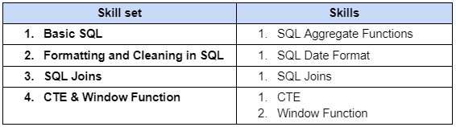
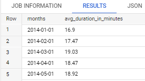
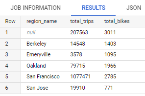
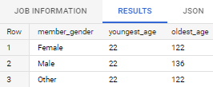
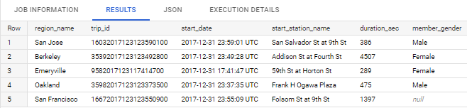
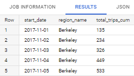
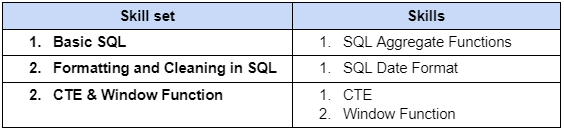
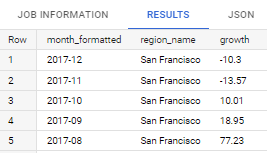
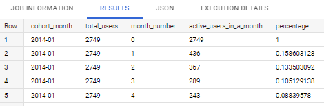
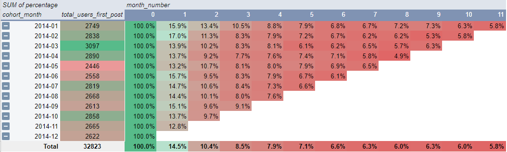

RevoU SQL Assignment
This project is the application of skills that have been learned in a course. We were given datasets and instructions to follow. And here are the results:
Intermediate projects
Dataset overview:
For Task 1 - 6: San Francisco Ford GoBike Share
San Francisco Ford GoBike, managed by Motivate, provides the Bay Area’s bike share system. Bike share is a convenient, healthy, affordable, and fun form of transportation. It involves a fleet of specially designed bikes that are locked into a network of docking stations. Bikes can be unlocked from one station and returned to any other station in the system. People use bike share to commute to work or school, run errands, get to appointments, and more. The dataset contains trip data from 2013-2018, including start time, end time, start station, end station, and latitude/longitude for each station.
SQL code:
For Task 1 - 5: see the code here.
Task:
-
Create a query to get the average amount of duration (in minutes) per month. Please use the start date from 2014 - 2017.
Expected output: month, average (in minute)
Code:SELECT DATE_TRUNC(date(start_date), MONTH) AS months, ROUND(AVG(duration_sec/60), 2) AS avg_duration_in_minutes FROM `bigquery-public-data.san_francisco_bikeshare.bikeshare_trips` WHERE EXTRACT(YEAR FROM start_date) BETWEEN 2014 AND 2017 GROUP BY months ORDER BY months ASC;Result: (Top 5 data)
 -
Create a query to get total trips and total number of unique bikes grouped by region name. Please used the start date from 2014 - 2017.
Expected output: region name, total trips, total bikes
Code:SELECT br.name AS region_name, COUNT(bt.trip_id) AS total_trips, COUNT(DISTINCT bt.bike_number) AS total_bikes FROM `bigquery-public-data.san_francisco_bikeshare.bikeshare_trips` bt LEFT JOIN `bigquery-public-data.san_francisco_bikeshare.bikeshare_station_info` si ON bt.start_station_id = si.station_id LEFT JOIN `bigquery-public-data.san_francisco_bikeshare.bikeshare_regions` br ON si.region_id = br.region_id WHERE EXTRACT(YEAR FROM bt.start_date) BETWEEN 2014 AND 2017 GROUP BY region_name ORDER BY region_name ASC;Result:
 -
Find the youngest and oldest age of the members, for each gender. Assume this year is 2022.
Expected output: gender, youngest age, oldest age
Code:WITH member_gender_age AS ( SELECT member_gender, 2022-member_birth_year AS age FROM `bigquery-public-data.san_francisco_bikeshare.bikeshare_trips` WHERE member_birth_year IS NOT NULL) SELECT member_gender, MIN(age) AS youngest_age, MAX(age) AS oldest_age FROM member_gender_age GROUP BY member_gender;Result:
 -
Get the latest departure trip in each region with detail below
Expected output: trip_id, duration_sec, start_date, start_station_name, member_gender, region_name
Code:WITH bikeshare_data AS( SELECT bt.trip_id AS trip_id, bt.start_date AS start_date, bt.start_station_name AS start_station_name, bt.duration_sec AS duration_sec, bt.member_gender AS member_gender, si.station_id AS station_id, br.name AS region_name, DENSE_RANK() OVER(PARTITION BY br.name ORDER BY start_date DESC) AS `rank` FROM `bigquery-public-data.san_francisco_bikeshare.bikeshare_trips` bt LEFT JOIN `bigquery-public-data.san_francisco_bikeshare.bikeshare_station_info` si ON bt.start_station_id = si.station_id LEFT JOIN `bigquery-public-data.san_francisco_bikeshare.bikeshare_regions` br ON si.region_id = br.region_id WHERE EXTRACT(YEAR FROM bt.start_date) BETWEEN 2014 AND 2017 ORDER BY rank ASC) SELECT region_name, trip_id, start_date, start_station_name, duration_sec, member_gender FROM bikeshare_data WHERE region_name IS NOT NULL AND `rank` = 1;Result:
 -
Create a query to get month to date of total trips in each region, breakdown by date. Please use timeframe from November 2017 until December 2017
Expected output: start date (in date format), region name, total trips (in cumulative)
Code:WITH obs AS( SELECT DATE(bt.start_date) AS start_date, EXTRACT(DAY FROM start_date) AS day, EXTRACT(MONTH FROM start_date) AS month, EXTRACT(YEAR FROM start_date) AS year, AS region_name, COUNT(bt.trip_id) AS total_trips, FROM `bigquery-public-data.san_francisco_bikeshare.bikeshare_trips` bt LEFT JOIN `bigquery-public-data.san_francisco_bikeshare.bikeshare_station_info` si ON bt.start_station_id = si.station_id LEFT JOIN `bigquery-public-data.san_francisco_bikeshare.bikeshare_regions` br ON si.region_id = br.region_id WHERE br.name IS NOT NULL AND EXTRACT(MONTH FROM start_date) IN (11,12) AND EXTRACT(YEAR FROM start_date) = 2017 GROUP BY region_name, year, month, day, start_date ORDER BY region_name, year, month, day, start_date) SELECT start_date, region_name, SUM(total_trips) OVER(PARTITION BY region_name, month ORDER BY day ASC) `total_trips_cum` FROM obs ORDER BY region_name, year, month, day, start_date;Result: (Top 5 data)

Advance projects
Dataset overview:
For Task 7: Hacker News.
This dataset contains all stories and comments from Hacker News from its launch in 2006 to present. Each story contains a story ID, the author that made the post, when it was written, and the number of points the story received.
SQL code:
For Task 6 & 7: see the code here.
Task:
-
Find monthly growth of trips in percentage, ordered by time descendingly. Only for trips from the region that has the highest total number of trips.
Please use the start date from 2014 - 2017.
Expected output: month, region, growth (%)
Code:WITH all_data AS( SELECT br.region_id AS region_id, br.name AS region_name, bt.trip_id AS trip_id, bt.start_date AS star_date, EXTRACT(YEAR FROM start_date) AS year, EXTRACT(MONTH FROM start_date) AS month, FORMAT_DATE("%Y-%m", DATE(start_date)) AS month_formatted FROM `bigquery-public-data.san_francisco_bikeshare.bikeshare_trips` bt LEFT JOIN `bigquery-public-data.san_francisco_bikeshare.bikeshare_station_info` si ON bt.start_station_id = si.station_id LEFT JOIN `bigquery-public-data.san_francisco_bikeshare.bikeshare_regions` br ON si.region_id = br.region_id WHERE EXTRACT(YEAR FROM start_date) BETWEEN 2014 AND 2017 ), number_of_trip_per_region AS( SELECT region_id, region_name, COUNT(trip_id) AS total_trips FROM all_data GROUP BY region_id, region_name ), region_rank AS( SELECT region_id, region_name, total_trips,DENSE_RANK() OVER(ORDER BY total_trips DESC) AS `rank` FROM number_of_trip_per_region ), highest_trip_region AS( SELECT region_id, region_name FROM region_rank WHERE `rank` = 1 ), total_trip_by_year_month_region AS( SELECT year, month, month_formatted, all_data.region_name, COUNT(trip_id) AS current_trips FROM all_data INNER JOIN highest_trip_region ON all_data.region_id = highest_trip_region.region_id WHERE all_data.region_name IS NOT NULL GROUP BY all_data.region_name, year, month, month_formatted ORDER BY all_data.region_name, year, month, month_formatted ), current_prev_trips_2014_2015_2016 AS( SELECT *, LAG(current_trips) OVER(ORDER BY month_formatted ASC) AS prev_trips, FROM total_trip_by_year_month_region WHERE region_name IS NOT NULL AND year IN(2014,2015,2016) GROUP BY region_name, year, month, month_formatted, current_trips ORDER BY region_name, year DESC, month DESC ), current_prev_trips_2017 AS( SELECT *, LAG(current_trips) OVER(PARTITION BY year ORDER BY month ASC) AS prev_trips, FROM total_trip_by_year_month_region WHERE region_name IS NOT NULL AND year = 2017 GROUP BY region_name, year, month, month_formatted, current_trips ORDER BY region_name, year, month DESC ), growth_2014_2015_2016 AS( SELECT month_formatted, region_name, current_trips, prev_trips, ROUND(((current_trips-prev_trips)/prev_trips)*100,2) AS growth FROM current_prev_trips_2014_2015_2016 GROUP BY region_name, year, month, month_formatted, current_trips, prev_trips ORDER BY region_name, year DESC, month DESC ), growth_2017 AS( SELECT month_formatted, region_name, current_trips, prev_trips, ROUND(((current_trips-prev_trips)/prev_trips)*100,2) AS growth FROM current_prev_trips_2017 GROUP BY region_name, year, month, month_formatted, current_trips, prev_trips ORDER BY region_name, year DESC, month DESC ) SELECT month_formatted, region_name, growth FROM growth_2014_2015_2016 UNION ALL SELECT month_formatted, region_name, growth FROM growth_2017 ORDER BY month_formatted DESC;Result: (Top 5 data)
 -
Please use table "stories" to create monthly retention cohorts (the groups, or cohort, can be define based upon the data that a user/author started a story)
and then how many of them (%) coming back for the following months in 2014. After analysing the retention cohort, is there any interesting insight that we can get?
(Notes: initial start date can be defined using first story start date from each author in table stories)
Expected output: first post month, active post month, number of users
Code:WITH cohort_items AS( SELECT `by` AS user_id, MIN(DATE(DATE_TRUNC(time_ts,MONTH))) AS cohort_month, FROM `bigquery-public-data.hacker_news.stories` GROUP BY 1 ), user_activities AS( SELECT act.`by` AS user_id, DATE_DIFF( DATE(DATE_TRUNC(time_ts,MONTH)), cohort.cohort_month, MONTH ) AS month_number, FROM `bigquery-public-data.hacker_news.stories` act LEFT JOIN cohort_items cohort ON act.`by` = cohort.user_id WHERE EXTRACT(YEAR FROM cohort.cohort_month) = 2014 AND EXTRACT (YEAR FROM act.time_ts) = 2014 GROUP BY 1,2 ), cohort_size AS( SELECT cohort_month, COUNT(*) AS num_users FROM cohort_items GROUP BY 1 ORDER BY 1 ), retention_table AS( SELECT c.cohort_month, a.month_number, COUNT(*) AS num_users FROM user_activities a LEFT JOIN cohort_items c ON a.user_id = c.user_id GROUP BY 1,2 ) SELECT FORMAT_DATE("%Y-%m", DATE(b.cohort_month)) as cohort_month, s.num_users as total_users, b.month_number, b.num_users as active_users_in_a_month, CAST(b.num_users AS decimal)/s.num_users AS percentage FROM retention_table b LEFT JOIN cohort_size s ON b.cohort_month = s.cohort_month WHERE b.cohort_month IS NOT NULL ORDER BY 1,3;Result: (Top 5 data)
 Result: (Cohort)
 In the cohort table, we can see that around 85.5% of users have not posted again in the second month. And from 14.5% of users who are still posting in the second month, only 10.4% are still posting in the third month or there is a 4.1% decrease in users posting in the third month. The decline in the first two months was the largest compared to the decrease in users who were still actively posting in the following months. To find out the causes and how to increase the percentage of user retention, we need to do a deeper analysis.